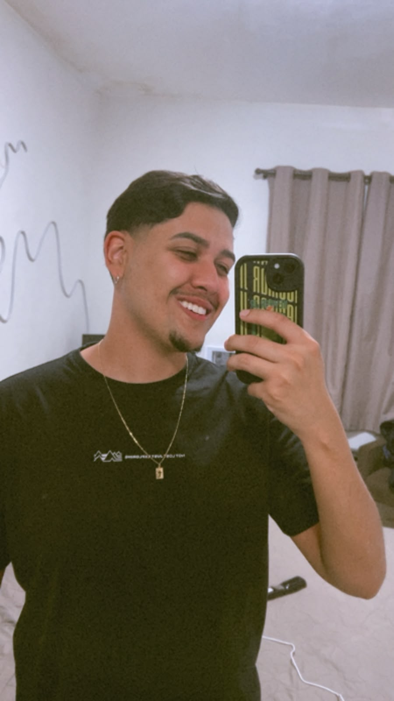

Olá, eu sou
Lucas Ribeiro
Estudante de Análise e Desenvolvimento de Sistemas
Apaixonado por tecnologia, aprendizado e novos desafios.
Conheça meus projetos
Sobre mim
Meu nome é Lucas Ribeiro, sou estudante de Análise e Desenvolvimento de Sistemas e moro em Brasília, Distrito Federal.
Tenho interesse em programação, desenvolvimento web e tecnologia. Busco constantemente adquirir novos conhecimentos e desenvolver minhas habilidades profissionais.
Além da tecnologia, sou apaixonado por carros e gosto de produzir conteúdos para redes sociais no meu tempo livre.
Tecnologias em aprendizado
Atualmente, estou construindo minha base de conhecimentos em programação e desenvolvimento de sistemas por meio das atividades e disciplinas da faculdade.
Projetos acadêmicos
Banco de Dados
Modelagem de bancos de dados e desenvolvimento de consultas SQL.
Programação em C
Desenvolvimento de algoritmos e resolução de problemas utilizando lógica de programação.
Desenvolvimento Web
Criação de páginas web utilizando HTML, CSS e JavaScript.
Git e GitHub
Versionamento de código e desenvolvimento colaborativo de projetos.
Contato
Acompanhe meus projetos e minha evolução na programação através do GitHub.